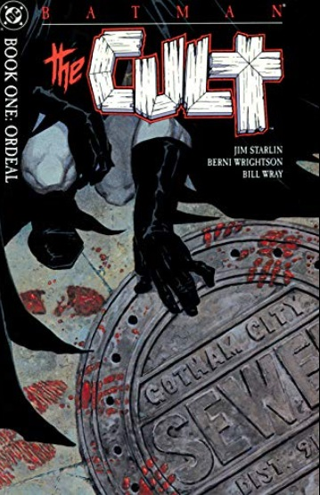

Batman - Year One
A classic from Frank Miller. Everything about this series oozes a certain grimness which they don't show in comics these days. A well-suited introduction to all the main characters in Gotham City. Does an excellent job at world creation and character building!!

Batman - The Man Who Laughs
Personally, this series provides a very evil & grim introduction to the Joker, and is sure to send chills down your optic nerve!! Set shortly after "Batman: Year One," This narrative explores the Joker's dark psyche and marks the beginning of his infamous rivalry with Batman.
Batman - The Long Halloween
Known for its noir atmosphere and complex storytelling, "The Long Halloween" is a cornerstone of Batman's lore. The story intricately portrays Harvey Dent's descent into becoming Two-Face and delves into Gotham's underworld dynamics. I personally love the aesthetic and layered narrative between Batman & Two-face.
Batman - Dark Victory
This serves as a direct sequel to "The Long Halloween." focusing on Batman's efforts to dismantle the remnants of Gotham's criminal underworld. As a new killer named The Hangman emerges.
Batman Chronicles - The Gauntlet
This one-shot comic explores the final test of young Dick Grayson before he officially becomes Robin, the Boy Wonder! This is a must-read for people interested in the origins of the iconic partnership between Batman and Robin.
Robin - Year One
This four-issue miniseries explores the challenges and triumphs Grayson faces while balancing his new role as Batman's sidekick with his personal life.It showcases his growth from a young acrobat into a determined and skilled crimefighter!!
Batgirl - Year One
This strip follows Barbara Gordon as she transforms into Batgirl despite her father’s disapproval. Batgirl takes on villains like Killer Moth & Firefly. An inspiring story that explores her motivations and challenges as she balances her dual life.

Batman - Second Chances
This series centers on Bruce Wayne's struggle with guilt and redemption after the death of Jason Todd, the second Robin. It dives into Batman's decision to take on a new Robin, Tim Drake, and their evolving partnership.
Teen Titans - Year One
This follows the early adventures of the Teen Titans, including Robin (Dick Grayson), Kid Flash (Wally West), Aqualad (Garth), Wonder Girl (Donna Troy), and Speedy (Roy Harper).It's a tale of friendship, discovery, and learning to harness their unique abilities while facing threats that test their unity and resolve.
Nightwing - Year One
This serves as the origin story of Dick Grayson after he leaves behind his Robin persona and becomes Nightwing. Throughout the storyline, Dick faces personal challenges, confronts old enemies, and forges new alliances, all while shaping his identity as Nightwing

Batman - The Killing Joke
The story revolves around the Joker's origin and his attempt to drive Commissioner Gordon insane to prove a point about the thin line between sanity and madness. The Joker very brutally uses Barbara as an example to highlight their contrasting philosophies and the tragic events that shaped them.

Batman - The Cult
This graphic novel shows Batman face one of his most challenging adversaries, Deacon Blackfire, who leads a violent cult in Gotham City. The graphic novel explores themes of power, control, and the psychological toll of vigilantism on Batman's psyche. An interesting take on the Dark Knight.

Batman - A Death In The Family
This is another one of my favorites. The very pivotal storyline shows how Batman meets tragedy and loss on a personal level. The narrative centers around Jason Todd, the second Robin, who seeks to uncover the identity of his biological mother. This quest leads him into conflict with the Joker, resulting in a brutal and tragic confrontation.

Batman - A Lonely Place Of Dying
This storyline introduces Tim Drake, the third Robin, into the Batman mythos. Tim Drake, a young fan of Batman and Robin, deduces their secret identities after witnessing Batman's erratic behavior. Tim convinces Dick Grayson, the original Robin and now Nightwing, to return to Gotham to help Batman.

Robin (1993)
Tim Drake, a skilled detective and martial artist, assumes the role of Robin with Batman's mentorship and guidance. The series delves into Tim's growth as a hero, his relationships with Batman and other members of the Bat-family, and his struggle to balance his duties as Robin with his personal life.
Batman: Knightfall
This is another personal favourite. It covers the perilous encounters of Batman, as he faces his worst adversary up until now: BANE. A wonderfully written story about how the Batman was broken and how he tries to pick up the pieces & desperately save Gotham from the hands of EVERY villian he has ever captured.

Green Lantern: Rebirth
Hal Jordan was one of the greatest heroes in the DCU until tragedy turned him into one of its greatest villains. This series shows us how his soul searches for redemption as the Spectre, and how he fights to win against his age old rivalry with PARALLAX!! A wonderful illustration by Johns Geoff to check out.
Green Lantern: No Fear
This comic book series that follows the journey of Hal Jordan as he returns to his role as Green Lantern after a period of absence. It reintroduces Hal to the Corps and focuses into his relationships with other Lanterns like Kilowog and Tomar-Tu. This strip explores the Green Lantern mythology and the emotional spectrum that powers the Lanterns' rings. A good read overall.
Green Lantern Corps: (2006)
This series explores the adventures of multiple Green Lanterns as they protect the universe from various threats. Ultimately leading to the introduction of the Sinestro Corps in the later parts of the series. A must read if you are interested in knowing about the Sinestro War, and the Wrath of the Yellow Lanterns!!